从 Live ISO 安装
用 Live ISO 将 VortexROS 离线安装到本地磁盘。安装期间需要可用的串口或显示器和键盘。安装会擦除所选目标盘。已经运行 VortexROS 的设备请使用升级与回退。
工作原理
设备固件从 U 盘或虚拟光驱启动 Live 系统。安装器验证签名并把系统和启动文件写入目标盘，再根据向导选择生成初始配置。下次启动从目标盘加载已安装系统。安装介质拔除后，登录、网络配置和签名升级都在已安装系统内操作。
配置与验证
1. 准备介质和独立控制台
备份目标盘上的数据，记录目标盘的型号和容量。使用随制品提供的 SHA-256 核对 ISO。Linux 可执行 sha256sum ISO文件名，Windows PowerShell 可执行 Get-FileHash ISO文件名 -Algorithm SHA256。摘要一致后，将 ISO 以磁盘映像写入 U 盘，或在虚拟机中挂载原 ISO。写 U 盘时确认选中的是安装介质。安装开始前确认能操作设备的串口，或已连接显示器和键盘。
下图的 GRUB 菜单来自实机。其余界面图取自 r4 安装串口记录，保留实际终端文字，省略重复重绘。磁盘名、CPU 与网卡编号以本机为准。
2. 在 GRUB 选择安装终端
通过串口安装时选 VortexROS Live (serial)。接显示器和键盘时选 VortexROS Live (local display)。安装介质的菜单默认等约 10 秒。进入后应看到查找介质、验证签名和加载系统的提示，随后出现安装向导。
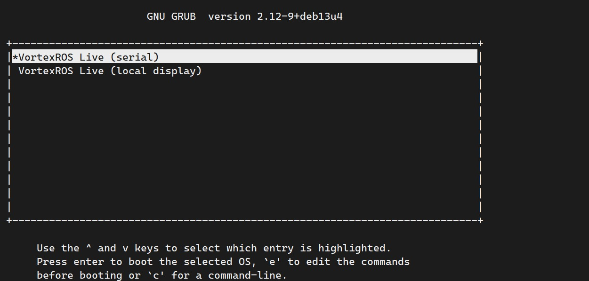
3. 选择目标盘
对照 /dev/disk/by-id/ 下的持久标识和容量，输入目标盘序号。示例中只有一块 4.0 GiB 的虚拟测试盘。设备有多块容量相同的磁盘时，先比对持久标识再继续。此处完成选择，最终的擦盘确认在后面。
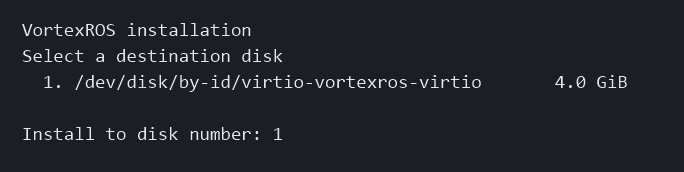
4. 设置管理员密码
输入并重复输入账户 vortexros 的管理员密码。使用 8–256 字节，且与账户名不同。录入时密码不回显。按错误提示重填当前字段即可，安装结束后用此密码登录目标盘系统。
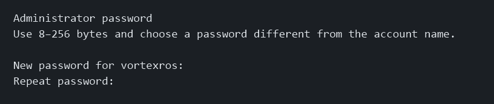
5. 选择是否保留串口登录
查看检测到的安装终端。本例为 ttyS0、115200 baud。以后通过串口管理或救援时选择 Y，并记录终端号和速率。方括号或默认值提示可用回车接受。使用显示器安装时，按实际维护方式决定是否启用已安装系统的串口登录。
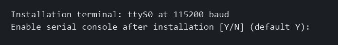
6. 核对硬件拓扑
先查看在线 CPU、插槽、核心、NUMA 内存与网卡的 PCI 地址、驱动和 IOMMU 组。系统启动时关闭 SMT，因此只从在线 CPU 选择主核与工作核。用 PCI 地址和当前检测到的 Linux 接口判断实际接线，尤其要区分管理口与业务口。
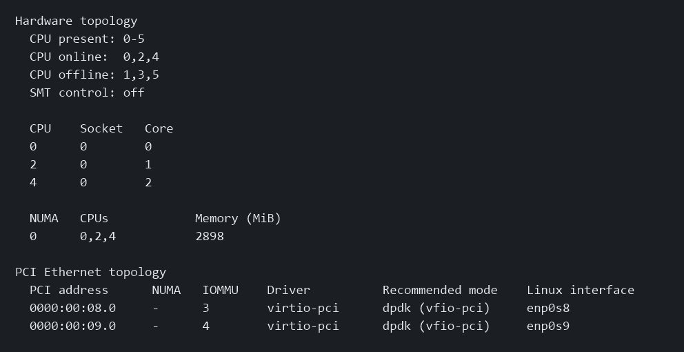
7. 选择网卡模式和队列
首次使用或只需先接通管理网络时，可在 Configure dataplane interfaces now 选择 N，保留 Linux 管理网卡。现在就配置 DPDK 时选择 Y。同类网卡使用同一组参数时选择批量设置，有单独管理口或设备能力不同时逐口设置。
项目 |
如何选择 |
|---|---|
|
|
RX/TX queue count |
从设备建议值开始。提高队列数前核对网卡能力和工作核数量。 |
RX/TX descriptors |
优先采用设备建议值。描述符影响队列能容纳的报文和内存开销。示例为一组经验证的虚拟机参数。 |
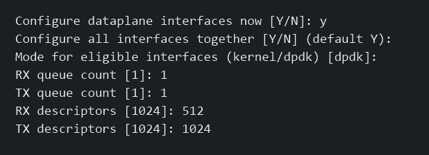
8. 设置 CPU、大页和 IOMMU
确认 PCI 地址和 Ethernet 名称对应正确。主核处理 VPP 主线程，工作核处理报文，使用不同在线 CPU。CPU 隔离会在目标系统启动时生效。大页按数据面 NUMA 节点预留，本例 512 个 2 MiB 页占用 1 GiB。设置前确认各 NUMA 节点的可用内存，尤其是小内存设备。给 VFIO 接管网卡时保留 IOMMU 打开，并确认固件启用了相应的 IOMMU 功能。
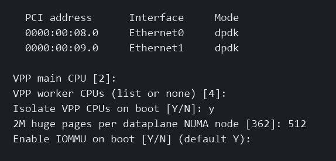
9. 核对并确认擦盘
查看验签后的 Target disk 和 System image。只有设备标识、版本和备份都正确时才确认。这里回车等同 Y。需要退出或重新检查时输入 N。
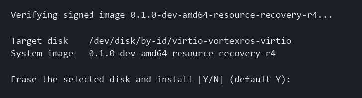
10. 拔除安装介质并首次登录
看到 Installed 和 Remove the installation medium 后，拔出实体 U 盘，或在虚拟机管理界面移除光驱或虚拟 U 盘，再按 Enter 重启。此时应从目标盘进入已安装系统的 GRUB，默认约 3 秒后启动。
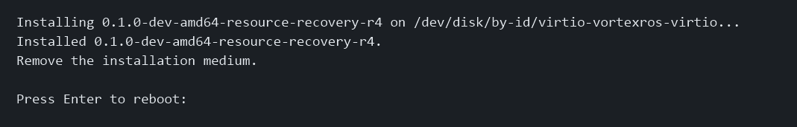
看到 VortexROS login: 后，输入 vortexros 和安装时设置的密码。登录成功可见产品提示符。
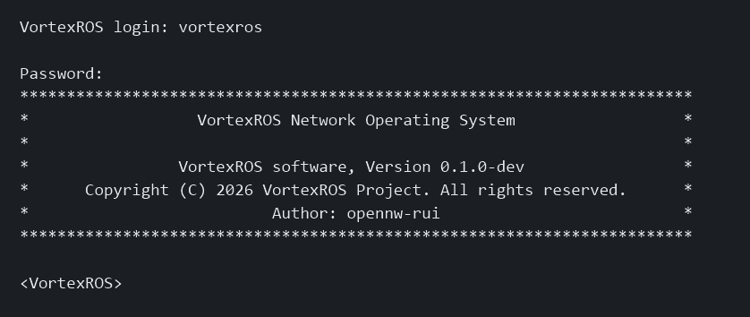
11. 验证安装
执行 display startup，确认运行、默认和下次启动都指向刚安装的版本。空盘首次安装时 Backup system software 为 NULL。下图及文本为 r4 启动后实际回显。
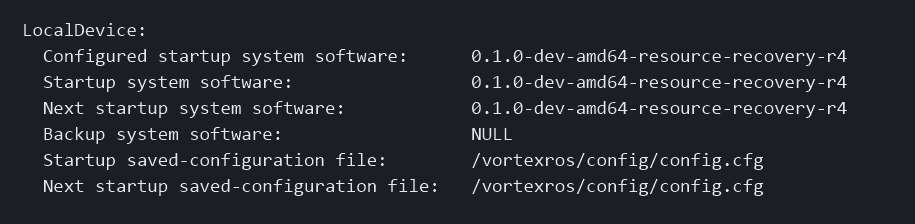
<VortexROS> display startup
LocalDevice:
Configured startup system software: 0.1.0-dev-amd64-resource-recovery-r4
Startup system software: 0.1.0-dev-amd64-resource-recovery-r4
Next startup system software: 0.1.0-dev-amd64-resource-recovery-r4
Backup system software: NULL
Startup saved-configuration file: /vortexros/config/config.cfg
Next startup saved-configuration file: /vortexros/config/config.cfg
再执行 display interface brief。本例接管两个 Virtio 口后的实测节选如下。选择 Linux 模式的接口会显示实际驱动类型。未接线的口可能保持 down。
<VortexROS> display interface brief
Interface PHY Proto InUti OutUti CRC Type MTU
Ethernet0 up up 0.0% 0.0% -- DPDK 1500
Ethernet1 up up 0.0% 0.0% -- DPDK 1500
用本地显示器安装的界面对照
下面是 r4 虚拟机的实际屏幕，从 UEFI 虚拟 U 盘离线安装到 SATA 盘。该虚拟机没有接入网卡，因此向导显示未检测到 PCI 网卡，并跳过网卡与数据面配置。实际设备有网卡时，按上方第 6–8 步核对和选择。
在 GRUB 用方向键选中
VortexROS Live (local display)，按 Enter。向导会在显示器上列出目标盘。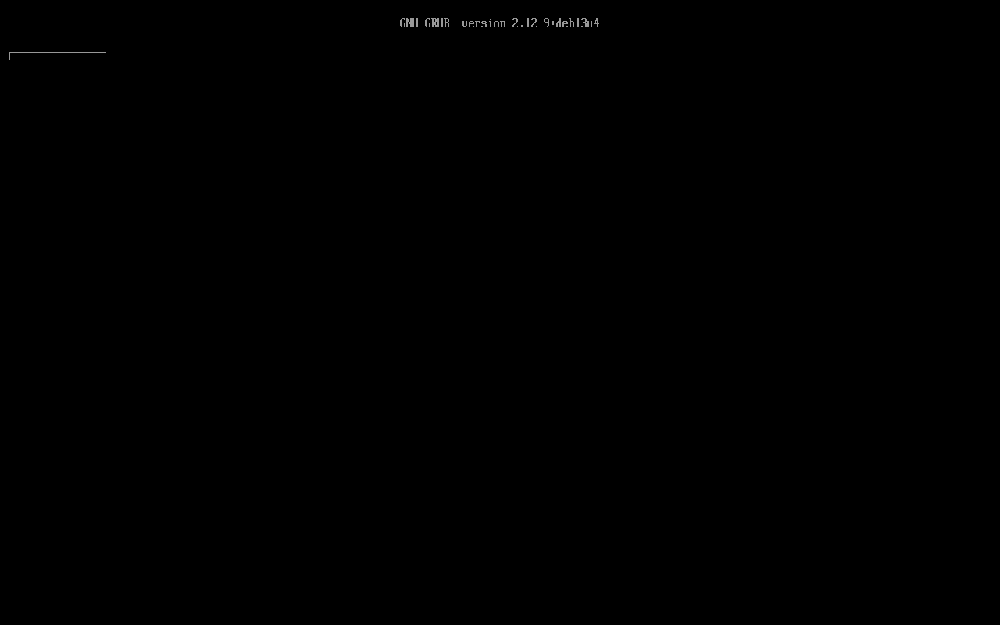
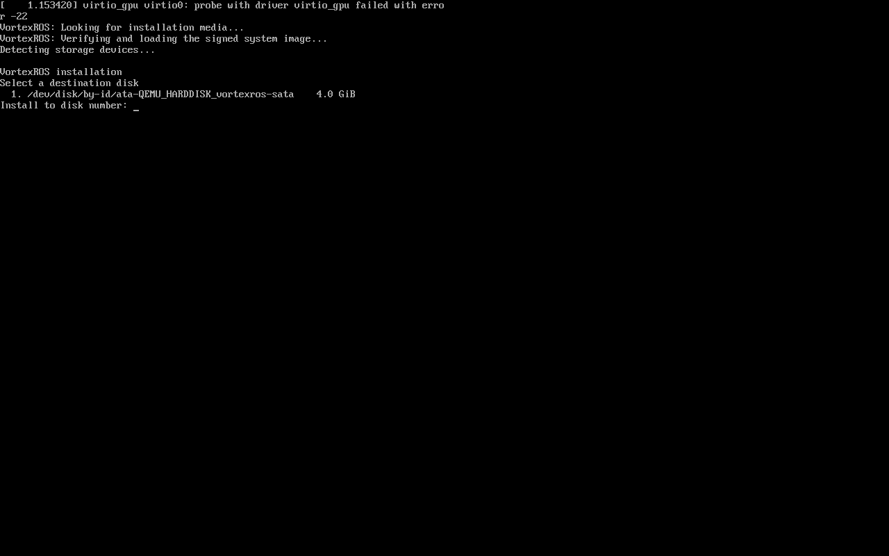
选盘后设置管理员密码，再按维护方式决定是否启用串口。本例使用本地键盘和显示器，接受关闭串口登录的默认值。
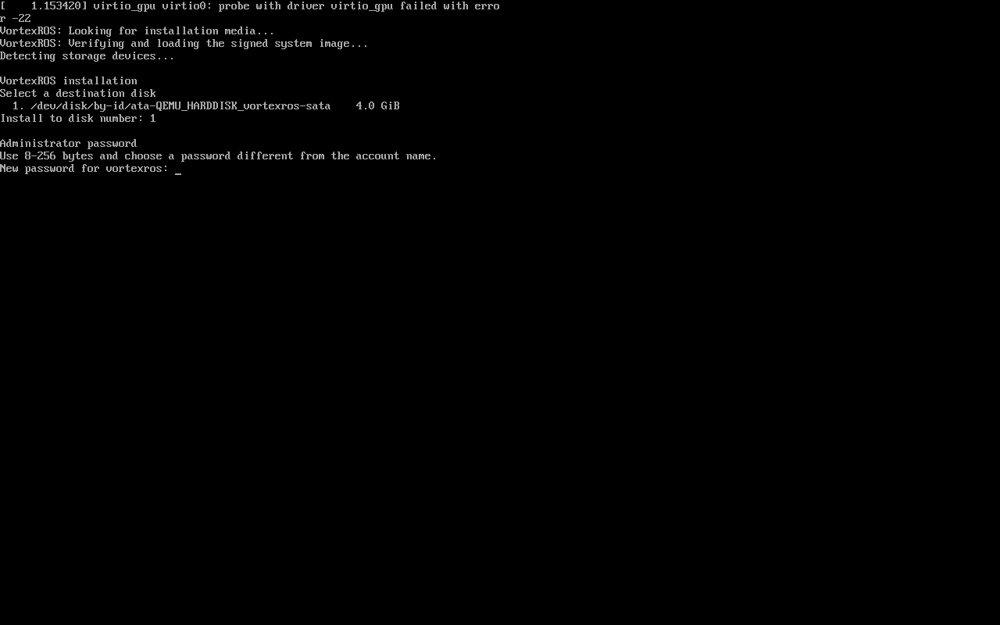
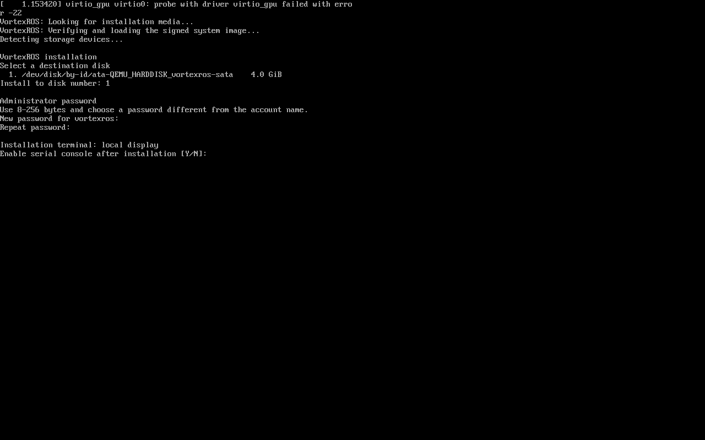
核对磁盘和镜像，确认写盘。看到移除介质提示后，先拔掉 U 盘，再按 Enter 重启。
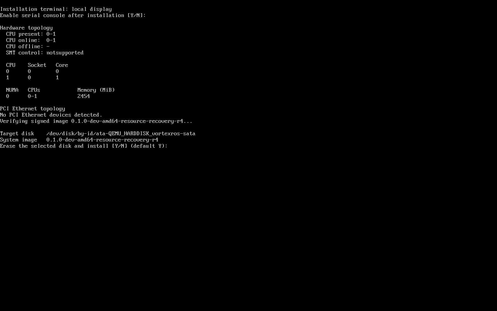
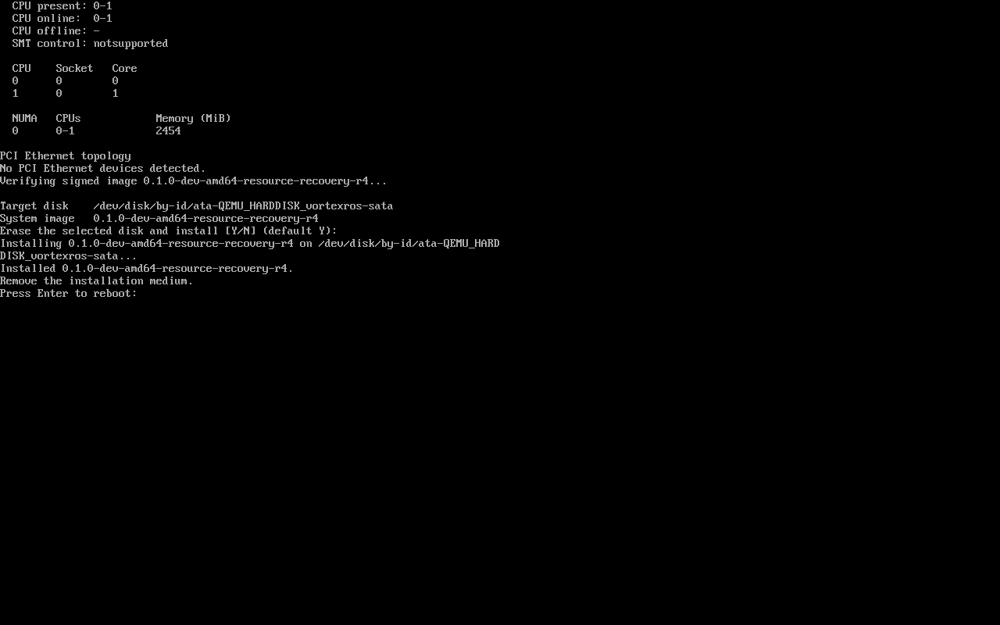
从目标盘启动后在 tty1 登录，看到
<VortexROS>后再按第 11 步核对版本和接口。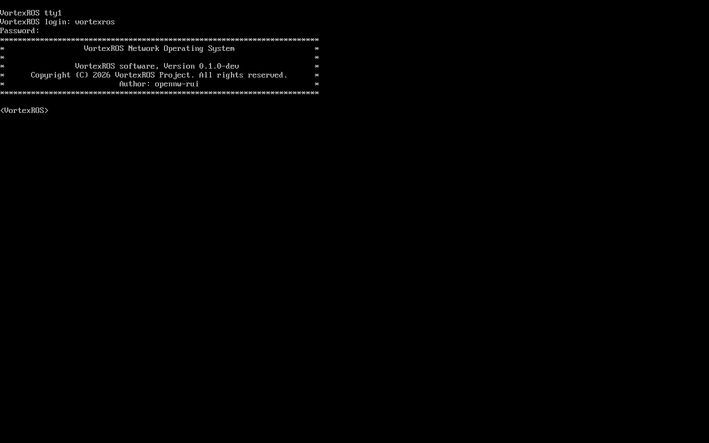
注意事项
进入 CLI 后默认镜像还未显示时，等待本次镜像确认事件，再重新查询
display startup。用display logbuffer service image查看本次启动记录。若再次进入 Live 菜单，检查是否已经移除安装介质，以及固件是否优先从目标盘启动。
若串口切换到目标盘后无提示，核对安装时是否启用串口、接线、端口号和波特率。也可到本地显示器确认设备是否已启动。